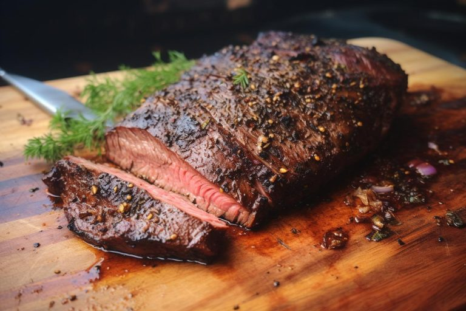

Steak

Classic Grilled Steak
Ingredients
- Steak
- Salt
- Pepper
- Garlic powder
- Butter
Steps
- Take out the steak from the fridge and let it sit at room temperature for 30 minutes
- Season the steak with salt, pepper, and garlic powder
- Preheat your grill to high heat
- Grill the steak for about 4-5 minutes per side for medium-rare
- Let the steak rest for a few minutes before slicing and serving